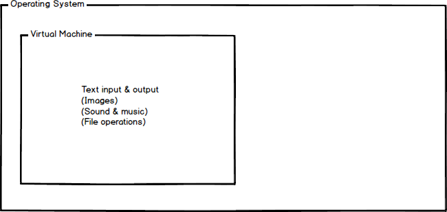
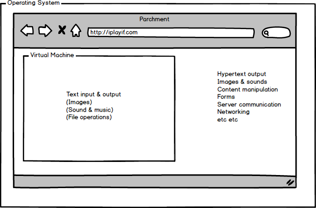
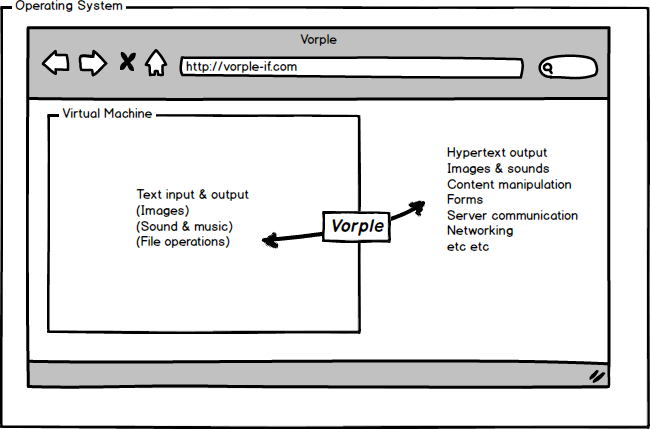

Enrichening Inform 7 Interactive Fiction with Vorple

About
Introduction to Vorple
The short version
Vorple is a library and a custom web interpreter for Inform 7 that lets you do things that so far haven't been possible, like displaying images, playing sounds, adding tooltips and notifications and much more. Take a look at the demo page for some examples.
The long version
Back in the days when home computers first entered consumer markets there were many competing companies selling computers that weren't compatible with each other. Infocom had to solve the problem of programming and distributing their games to as wide array of computers as possible (to maximize their potential customers) with varying specifications and limitations.
The solution was to create a virtual machine that would harmonize the differences between computer systems. The game file would always be the same for each system and there would be an interpreter program that would translate the game file into instructions the computer understood. This way the game could be programmed and compiled only once and it would work on any system that had an interpreter.
The virtual machine was called Z-machine after Zork, the first game that used it. Decades later Inform 7 still compiles to Z-machine (and Glulx, the contemporary virtual machine that works basically the same way).
To a modern consumer of interactive fiction the virtual machine model has other benefits in addition to being able to play the stories in a wide selection of devices. The virtual machine is effectively a sandbox that limits what story files are allowed to do. They can't, for example, delete files from the computer or install malicious software. When you download an interactive fiction story file you can be certain that it isn't a virus and it can't do anything harmful.
To an author of interactive fiction the sandbox can sometimes feel rather limiting. We've come a long way since the early days of Infocom and the things we now casually do with computers is far more than anyone could have dreamed of 30 years ago. Yet interactive fiction is still confined to streaming text, displaying pictures, playing sounds and performing some limited file operations.
Cue the Internet age. Parchment is an online Z-machine/Glulx interpreter that lets you play interactive fiction on any computer with Internet access and a web browser. A modern web browser is also a sandbox, but with quite a lot of more capabilities (but still restrictions in place so that in theory you can visit any web page and be sure that you can't catch anything malicious).
Parchment was a small revolution by itself and turned the community focus from downloadable story files to Internet play, but Parchment is still "only" an implementation of existing virtual machines. It restricts the story files to the same sandbox as offline interpreters do.
This is where Vorple comes in. It makes a small addition to the interpreter so that the story files can break free of the Z-machine sandbox and communicate with the browser running the interpreter.
With this bridge in place the story file can do pretty much whatever it wants with the user interface and the story text—even story text that has already been printed.
In addition Vorple provides a JavaScript library that makes it easier to add features specifically to interactive fiction stories (as opposed to usual web pages). The Inform 7 extensions are mainly interfaces to the underlying JavaScript library.
To recap, Vorple consists of three main features:
- JavaScript library for building and handling user interface elements
- Inform 7 extensions that can use the library
- Customized interpreter that lets the extensions access the library
The project's headquarters are at www.vorple-if.com where you'll find all the official materials and downloads. JavaScript developers who want to dig into the innards of the system can find the source code at Github.
The library and all official materials are open source and free for anyone to use for any purpose. (Mandatory footnote: Do still read all the licenses if you want to use it commercially or as a part of a closed system. Some third party themes, for example, are subject to slightly more restrictive licenses.)
Vorple is available also for Undum, a hypertext fiction framework. It is described in detail in Enhancing Undum Hypertext Fiction with Vorple.
Known limitations
Vorple is experimental software and in early stages of development. There are a number of known issues that will be fixed in later releases:
- Command history (browsing old commands with the up arrow key) isn't available.
- Undoing is not reliable if the browser communicates with the story file using hidden commands.
- Saving and restoring stories is likely to work erratically.
At the moment only Z-machine is supported. Glulx support is waiting for the next version of the Glulx specification. This is to avoid creating a competing non-standard specification.
Installation and usage
Getting started
Remember that the interpreter running inside the Inform IDE is not a Vorple-capable interpreter, so you won't see any of the new features when you run the story in it. You need to release the story and play in a web browser instead.
Support
The best place to look for assistance is the community forum at intfiction.org. Vorple's author frequents the forum, as do other experienced authors who are happy to answer civilized help requests about authoring with Inform, Vorple or other systems.
Bugs can be reported at the project's Github pages or by sending mail to bugs@vorple-if.com.